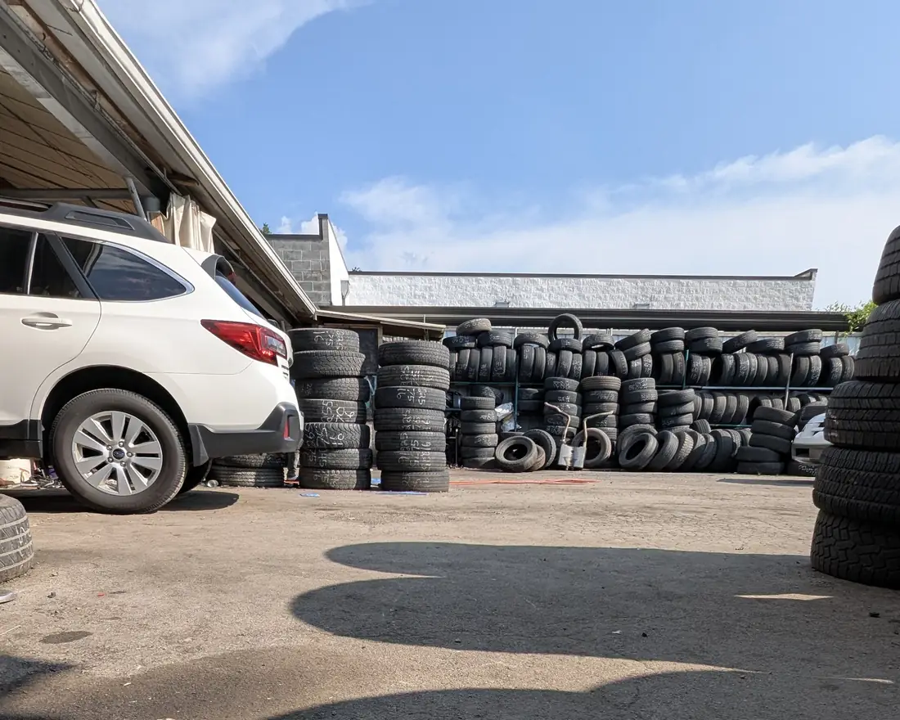
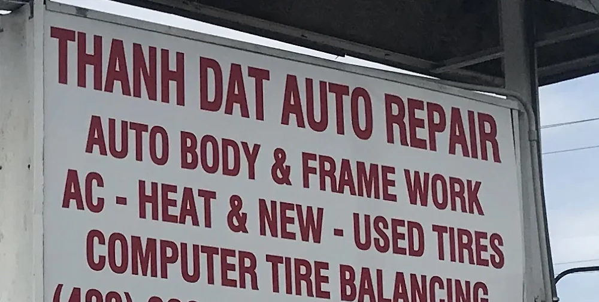
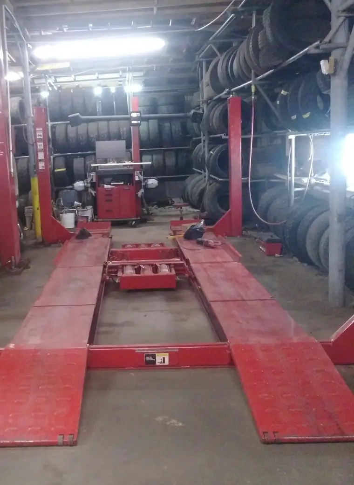
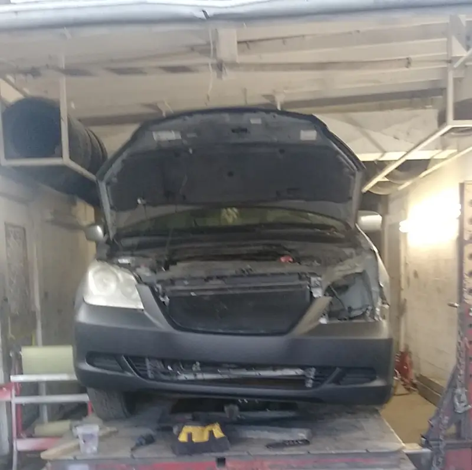
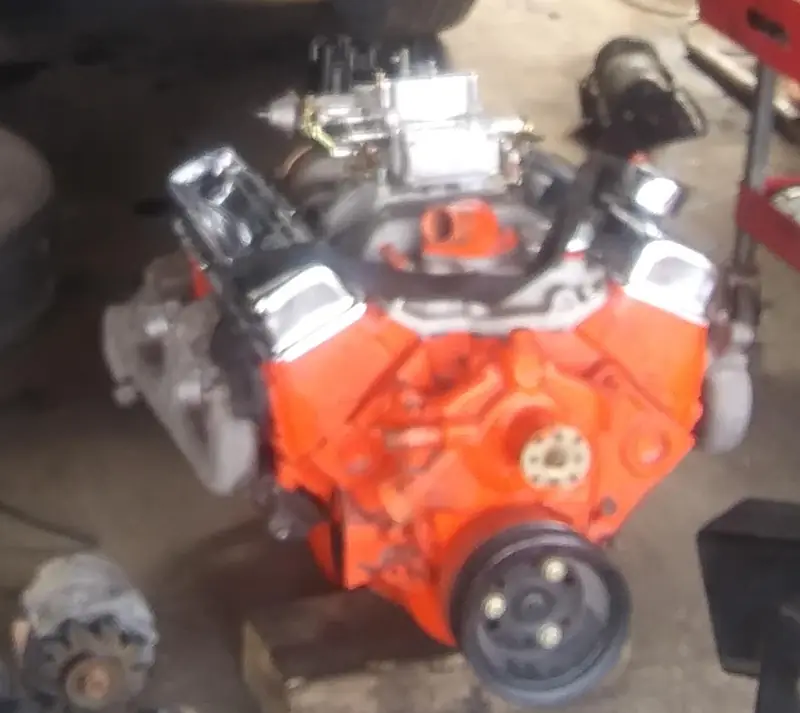
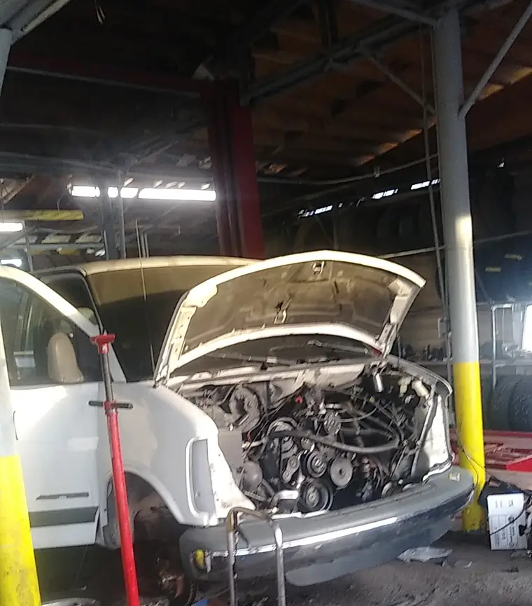

Body work, frame work, engines, A/C and tires — under one roof.
An independent shop on Rossville Boulevard with a four-post alignment rack, a frame rack and a yard full of new and used tires. Sixty-nine people have reviewed it on Google and the average is 4.7. A fair number of them were strangers who broke down passing through town.

Why people call Thanh Dat
What the shop does
This list is not a guess and it is not a marketing menu. It is read straight off the sign at the end of their own driveway.
Auto body & frame work
Panel and collision repair, and straightening on a frame rack — the part most independent shops send out to somebody else.
A/C and heat
Air conditioning and heater work. In a Chattanooga July this is not a luxury repair.
New and used tires
Both, in quantity, on site — so a single worn tire does not have to mean a full set at full price.
Computer tire balancing
Balancing done in-house on the four-post rack rather than booked out.
Mechanical work — engines, transmissions, brakes, front ends — is not on the sign but runs right through the reviews, which describe engine replacements, transmission and gasket work, brakes and front-end diagnosis.

The sign has said this for years
Everything on it is work they actually do, and almost none of it is findable online. Google currently files the shop under “auto repair” and lists exactly one offering: an oil change.
- Auto body & frame work
- A/C — heat
- New & used tires
- Computer tire balancing
So this page is mostly just putting the sign somewhere a phone can find it.
The shop
Every photograph below is theirs, taken on their own jobs and published on their own Google profile.

Four-post rack, and tires to the roof.

Front end stripped, body work under way.

A rebuilt V8 waiting to go in.

Work vans get fixed here too.
What customers actually said
Real Google reviews, quoted word for word, under the names the reviewers published them with.
“I was traveling through Tennessee and my engine gave out about 40 minutes outside of Chattanooga… He kept my vehicle, replaced the engine, changed my wheel bearings and tires all for a very affordable price. I believe if I had went ANYWHERE else I would have spent enough money to just buy a whole new car.”Jeffery JamesGoogle review, August 2026
“2 weeks ago our gas powered 16 foot box truck had an issue while on a delivery… When I got there I saw the lot was full (which is a very good sign that this is someone who knows what they are doing)… we were on the road at 7:30pm with a fully working truck ready for the 1000 mile journey to the final location.”Georgina JohnstonGoogle review, June 2026
“He got me right in, did the best road test to diagnose my front end problem I’ve ever had. No up-selling, he worked hard to get me back on the road fast with no appointment. Very fair price from a friendly and hard working guy.”Mike RaleyGoogle review, February 2026
“Awesome (old school) auto shop! We were traveling and had brake issues that needed immediate attention (after 5PM). Called to confirm they were open - arrived 10 minutes later - Charlie and his staff had us fixed up within an hour… Cannot rate highly enough - big gratitude from Wisconsin”G JustingerGoogle review, June 2025
Rating and reviews read live from the Google Places API and the Google Maps listing on 30 October 2026: 4.7 stars from 69 reviews.
Get hold of the shop
One number, answered at the shop. Most of the work here starts with somebody turning up with a problem rather than booking weeks out.
(423) 255-3403 Tap to call Thanh Dat Auto Repair3400 Rossville Blvd, Chattanooga, TN 37407. Wheelchair accessible entrance; restroom on site.
- Credit cards
- Debit cards
- Tap to pay
Hours, as Google currently lists them
Taken from their Google Business Profile on 30 October 2026 and repeated here unchanged.